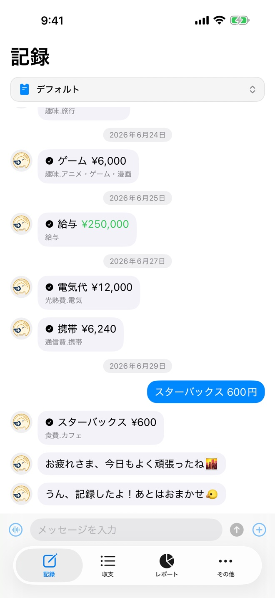
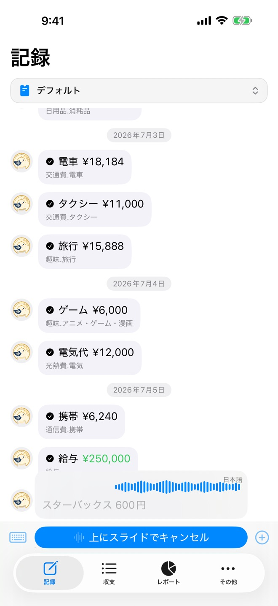
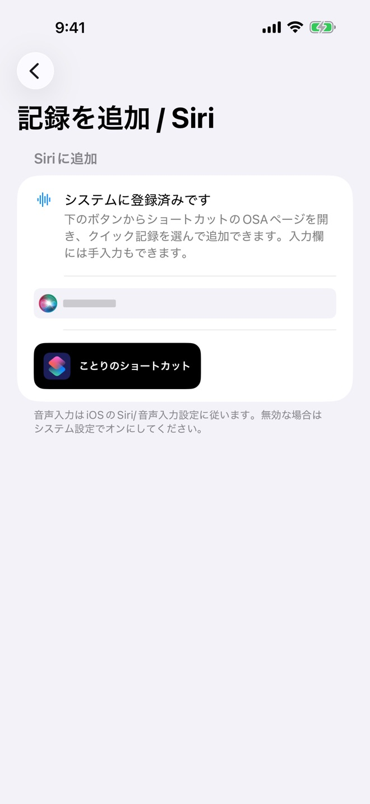
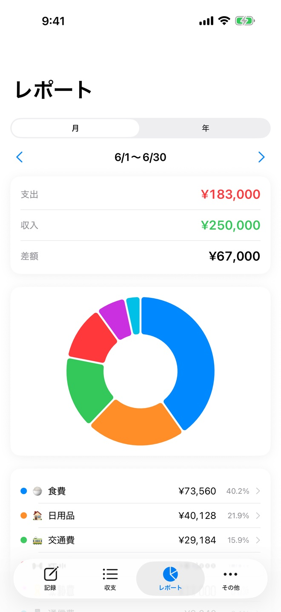
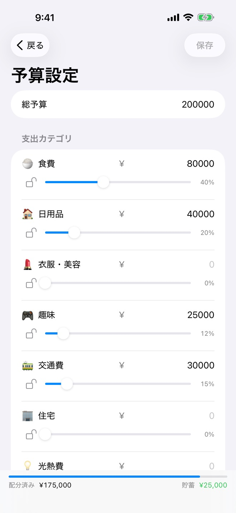
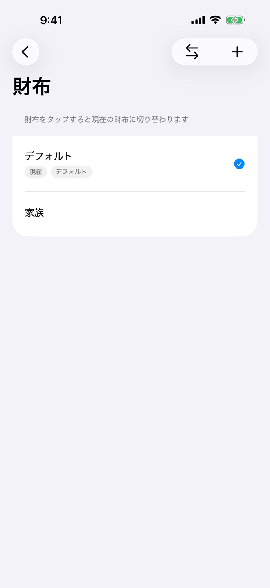
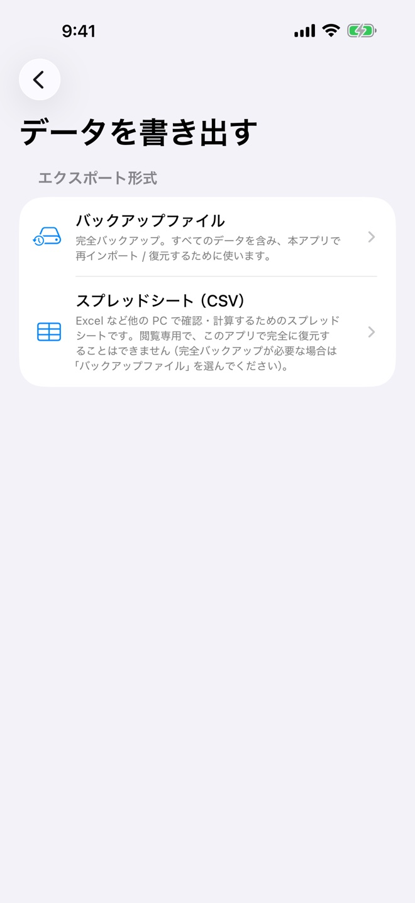
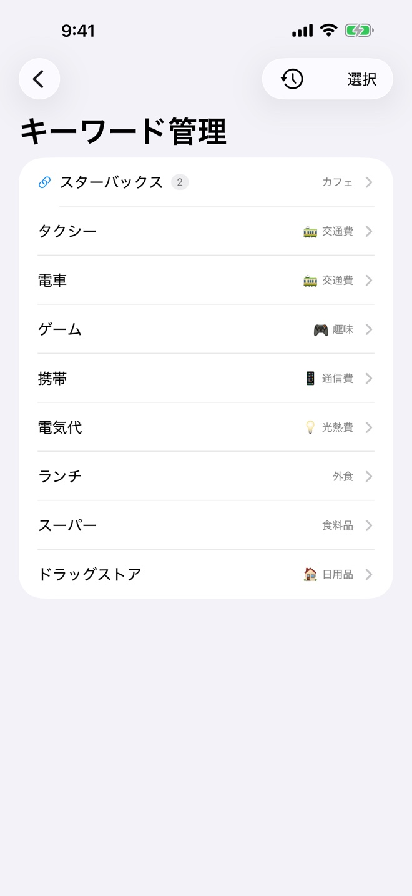

支出を一言つぶやけば、相棒のことりが受け止めて記録——金額もカテゴリも自動で整理。店名は、言えばそのまま残ります。Siri に頼んでも、ショートカットからでも、アプリを開かずに。「入力作業」じゃなく、ことりと話す感覚で家計簿が続きます。
あなたの言い回しや分類のクセを端末内で学習し、使うほど精度が上がります。学習データはすべて iPhone の中だけに保存されます。
家計データを開発者のサーバーに送信しません。すべて端末内で処理し、同期はあなた自身の iCloud だけ。アカウント登録も不要です。
支出をひとこと。例:「ランチ 1200円」
金額もカテゴリも判定して記録。言った店名はそのまま
使うほどあなた仕様に。次からもっと正確に
※実際のアプリの画面です。アップデートにより表示が変わる場合があります。






